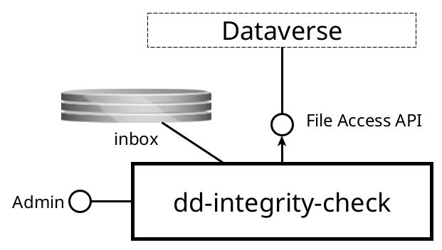

dd-integrity-check¶
Service that checks the integrity of Dataverse datafiles
Purpose¶
This service checks the integrity of Dataverse datafiles by comparing the expected checksum value from Dataverse with the actual checksum value calculated from the file bytes. This is done to detect any data corruption that may have occurred during file transfers or storage. The service also keeps a record of the checks performed, which can be used for monitoring and reporting purposes.
Interfaces¶
This service has the following interfaces:

Inbox¶
- Protocol type: Shared filesystem
- Internal or external: internal
- Purpose: to receive a list of files to check
Admin console¶
- Protocol type: HTTP
- Internal or external: internal
- Purpose: application monitoring and management
Consumed interfaces¶
Dataverse¶
- Protocol type: HTTP
- Internal or external: internal
- Purpose: to get file bytes from which to calculate the actual checksum.
Processing¶
The service periodically scans the inbox for CSV files. Each row schedules at most one integrity check task, unless a task for the same file is already pending or has run recently (based on the configured minimal frequency).
The CSV supports the following columns:
FILEID(required) – Dataverse file id.FILESIZE(required) – file size in bytes.CHECKSUM_TYPE(required) - checksum algorithm, for exampleMD5,SHA-1,SHA-256orSHA-512.CHECKSUM_VALUE(required) – expected checksum value from Dataverse.DATASET_PID(optional) – dataset persistent identifier for reporting.PUBLICATION_TIMESTAMP(optional) - publication timestamp (ISO-8601 offset date-time oryyyy-MM-dd HH:mm:ss[.SSS]).
After successful parsing, the processed CSV file is moved to the outbox.
The executor picks up scheduled tasks during the configured execution window. For each task, the service downloads the Dataverse file in chunks, retries failed
chunk downloads, computes the checksum, and stores the result. The task is marked FINISHED when processing completes (with the checksum match result),
or ERROR when processing fails.